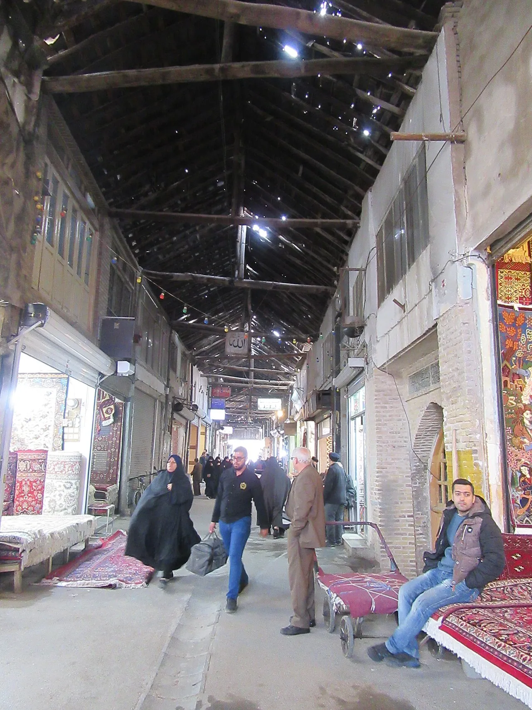

دليل العائلة
مشهد مع الأطفال:
برنامج مرن يترك مساحة للراحة.
السفر العائلي إلى مشهد قد يجمع بين الزيارة الدينية والأنشطة المناسبة للأطفال. الأفضل ألا يكون البرنامج مزدحماً؛ اختر نشاطاً رئيسياً واحداً أو اثنين يومياً واترك وقتاً للطعام والراحة وتغيّر احتياجات الصغار.

اختيار النشاط حسب العمر
فكر في مدة النشاط وطبيعة المكان واحتياجات الطفل، وليس في شهرة المعلم فقط. قد يناسب الأطفال الصغار مكان قصير الزيارة مع مساحة للراحة، بينما يستطيع الأكبر سناً الاستمتاع ببرنامج أطول بحسب طاقتهم.
ابدأ من دليل الأنشطة في مشهد والرحلات القريبة من المدينة ثم تحقق من مناسبة كل نشاط للعمر.
الحدائق والأنشطة الترفيهية
قبل التوجه إلى حديقة أو مدينة ألعاب أو مركز ترفيهي، تحقق من الموقع الرسمي أو قناة التواصل الموثوقة لمعرفة ساعات العمل والتذاكر والقيود العمرية أو الطولية وما إذا كان النشاط يعمل في ذلك اليوم. لا تعتمد على الأسعار أو الجداول القديمة.
إذا كان الطقس بارداً أو ممطراً، احتفظ بخيار داخلي بديل. لا تفترض أن كل مرفق مناسب للأطفال ذوي الاحتياجات الحركية أو الحسية دون سؤال مسبق.
الطعام والراحة والتنقل
خطط لتوقفات الطعام ودورات المياه والراحة، واحمل ما يحتاجه الطفل وفق عمره واحتياجاته. تحقق من مكونات الطعام عند وجود حساسية، واطلب معلومات واضحة من مقدم الخدمة بدلاً من التخمين.
عند استخدام سيارة أو سيارة أجرة، تحقق من طريقة تثبيت الطفل وملاءمة وسيلة النقل؛ ولا تفترض أن مقعد الأطفال متاح تلقائياً.
زيارة الحرم مع الأسرة
اتفقوا على نقطة التقاء واضحة إذا انفصل أفراد الأسرة، واحتفظ الطفل أو مرافقه بوسيلة تعريف مناسبة ورقم تواصل. اتبعوا التعليمات المعلنة في الحرم، واجعلوا الزيارة ملائمة لقدرة الأطفال على المشي والانتظار.
راجع دليل زيارة الحرم ودليل السفر العائلي إلى مشهد لتنظيم بقية الرحلة.
نموذج يوم عائلي مرن
يمكن أن يبدأ اليوم بزيارة قصيرة أو نشاط رئيسي، ثم استراحة وغداء، وبعدها نشاط قريب إذا كانت الأسرة مرتاحة. ضع الأنشطة الخارجية في وقت ملائم للطقس، ولا تحجز مواعيد متتابعة يصعب تعديلها.
استخدم برنامج ثلاثة أيام في مشهد كهيكل أولي فقط، ثم عدّله بحسب عمر الأطفال واحتياجاتهم.